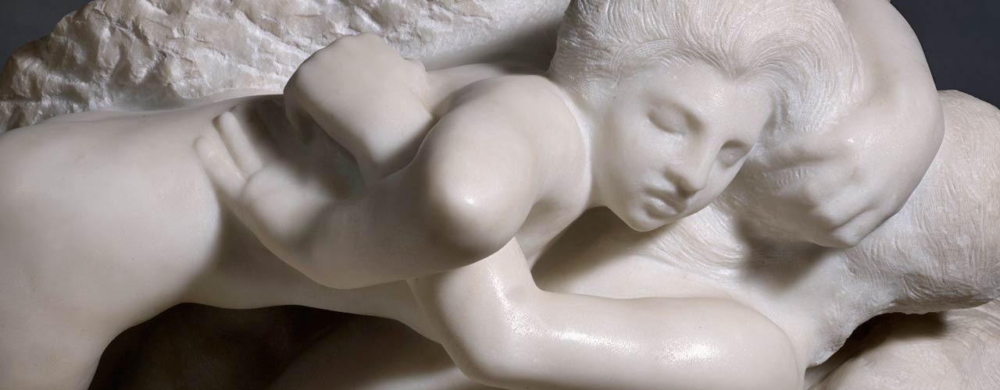

Jakbym miał przed sobą całe wieki czasu
Oczekiwać na boski podszept natchnienia, w ciszy i skupieniu wsłuchiwać się w drgnienia własnej duszy. Nie podążać na wskroś znaną sobie drogą, wijącą się bez końca, lecz wiodącą donikąd. Ujarzmić strumień poetyckiej inspiracji, przyoblec go w plastyczny, nasycony liryzmem kształt o głębokiej, ewokatywnej sile wyrazu. Nie poddawać się biernie ulotnym wrażeniom chwili, lecz „przeczuwać burze, wzburzony jak fala mórz”…
Rilke, w ślad za swym mistrzem Rodinem, pragnie zawładnąć swym natchnieniem i nadać mu kształt rzeczy. Roi, by tworzyć samoistne dzieła sztuki, które mogłyby stać niczym rzeźby, odjęte czasowi i oddane przestrzeni. Pragnie kreować nowe życie — życie rozbudzone przez wrażenia świata zewnętrznego, zrodzone z naoczności i odtworzone w słowach, a zarazem pulsujące własnym rytmem swej wewnętrznej istoty, w oderwaniu od wszelkiej ulotności i przemijalności.
Wymaga to cierpliwości, wytrwałej obserwacji świata widzialnego i nieomal nabożnego skupienia przy przetapianiu owych wrażeń w złoto poetyckiego słowa. Żąda bezgranicznej samotności, kiedy dzień każdy zda się niczym całe życie. Oddania się bez reszty nakazom rodinowskiej ewangelii „toujours travailler, rien que travailler”.
Szlak samotności, wiodący ku artystycznemu mistrzostwu, usiany jest piętrzącymi się trudnościami, konieczność stawienia im czoła rodzi przygnębienie, czasem gorycz zwątpienia. Źródłem uczuć wewnętrznego rozdarcia są chwile, miesiące, lata niecierpliwego wyczekiwania na spełnienie nakazu pisania, na przypływ „inspiracji i wewnętrznego przymusu tworzenia”, bez których Rilke — wedle słów księżnej Marie von Thurn und Taxis — nie napisał ani jednej linijki wiersza. Czas próby dla artysty nie przychodzi bowiem w chwilach twórczego spełnienia, lecz „pomiędzy nimi, kiedy zwyczajne życie rozprasza myśli, a powszednia miłość skrywa pokusę”.
Rilke słucha wezwania Rodina, wierząc, że dzięki temu zdoła zachować twórcze natchnienie. Uświadamia sobie wszakże, iż jego sztuka nierozerwalnie związana jest z rzemiosłem — codziennym mozołem wykuwania rzeczy z granitu ludzkiej mowy, bezustanną pracą, która wymaga bezbrzeżnej wytrwałości. „Mam w sobie cierpliwość na całe stulecia i chcę żyć, jakbym miał przed sobą całe wieki czasu”.